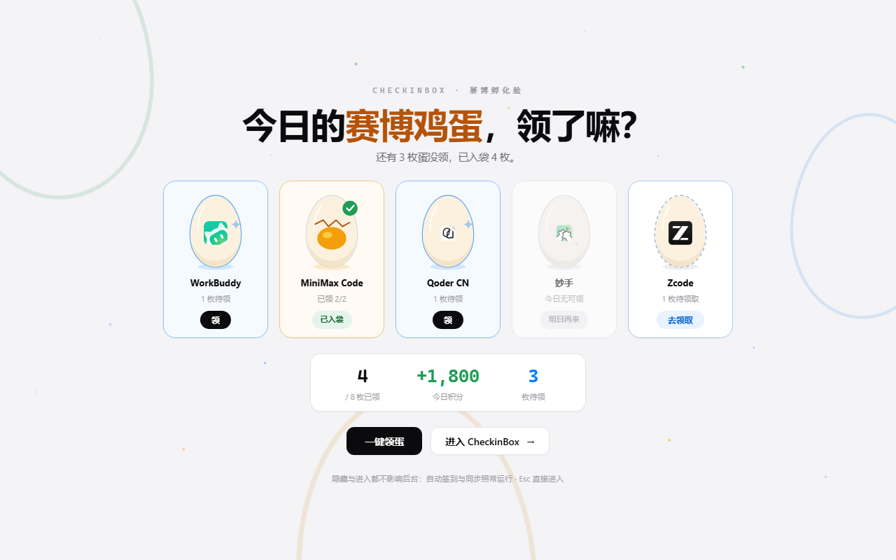

启动先看蛋
一个平台一枚蛋。已领的是裂壳金蛋，能领的会发光，要手动领的是青圈，没号的是暗蛋。点「领」就领，领完再进主界面。
CHECKINBOX · 赛博孵化舱
把几个 AI 编程客户端的每日积分收进一个窗口。开电脑先看蛋： 能领的点一下，领完进主界面；自动签到、账号续期、换号保留聊天记录， 都在后台跑。

它能帮你省掉什么
签到只是入口，平时它就在托盘里待着。
一个平台一枚蛋。已领的是裂壳金蛋，能领的会发光，要手动领的是青圈，没号的是暗蛋。点「领」就领，领完再进主界面。
每个平台有自己的时间窗，账号之间随机错开。晚开软件也会在窗内补跑；签失败就报失败，不会假装已签。
没登在客户端上的账号，token 快过期时会自己刷新。凭据用 Windows DPAPI 加密，只留在这台机器。
点一下换号：关客户端、备份、写凭据、再启动。WorkBuddy 和 Qoder 的本地聊天记录可以留着，动之前先备份。
剩余、已用、发放和批次都能看，还有最近 7 天的趋势。低于阈值标红；7 天内到期或有新的可领，会提醒你。
关窗口可以缩到托盘，开机也能静默启动。窗口不开，签到和同步照样跑。
支持的平台
优先读取本机已登录状态；需要时也支持浏览器授权，不保存密码。
每天领，连签有加成
每天 10:00 领取；体验版免费用户已停发
每日 100 签到，注册/月度自动到账
积分和套餐
看余额，提醒领取
每日 100 签到，会员 200
界面一览
截图使用演示数据，点击可查看高清原图。
第一次使用
装安装包，或者直接用便携版。Windows 10/11；Win10 要装 WebView2。
点「从本机导入」，把已经登录的客户端读进来；也可以用浏览器授权加号。
在启动页点「一键领蛋」。时间窗确认一次，之后就不用管了。
下载
最新版都在 GitHub Releases：安装包、MSI、免安装版，一页下完。
安装包未做代码签名，首次运行可能提示「未知发布者」：点「更多信息 → 仍要运行」。
中文向导，装到当前用户，不用管理员权限。
CheckinBox_<版本>_x64-setup.exe
给企业部署和批量分发用。
CheckinBox_<版本>_x64_zh-CN.msi
双击就能用，配置和账号还在本机数据目录。
CheckinBox_<版本>_portable.exe
问答
安装包没买代码签名证书。点「更多信息 → 仍要运行」就行；源码和构建流程都在 GitHub，不放心可以自己核。
都在本机 %APPDATA%\CheckinBox\。token 用 Windows DPAPI 加密，绑定当前用户；日志和界面里看不到明文。
不用。导入后凭据存在账号池里，快过期会自己续；客户端只在导入和换号时用一下。
默认不碰聊天数据。开了「换号同步聊天记录」后，会先把数据库和 WAL/SHM 备份到单独目录，再合并；同步失败也不影响换号。
NSIS 安装版启动后会自动检查更新，设置里也能手动检查；弹窗会写明更新内容。便携版和 MSI 版不会自动安装，会提示下载新版。旧版 v0.1.0 没有更新模块，需要手动安装一次新版，之后才能自动更新。
默认不会。开启「错过时间窗自动补签」后，窗口结束后再打开软件会补跑一次；窗口还没开始的平台（比如 10 点开放的 Qoder）会正常等到自己的窗口，不会被提前签。
MiniMax 有运行中护栏，状态不明就不刷。Qoder 续期会换 refresh token，但旧的不会马上失效，桌面端照常用。Trae 换号前会校验目标账号，失效会话会被拒绝并重新拉起当前客户端。
Windows 10/11，支持 MiniMax Code、Qoder CN、WorkBuddy、妙手、ZCode、Trae CN。这些接口不是公开的，客户端一改版就可能变。